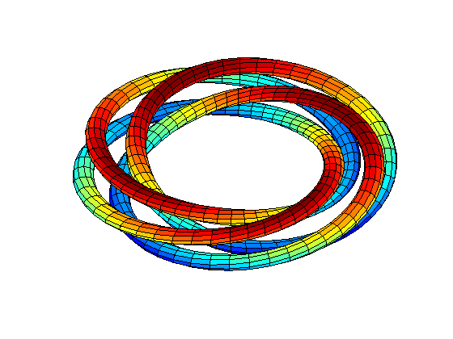

Four Linked Tori
Revolve four off-center circles to generate four linked unknotted tori.
Thanks to C. Henry Edwards, Dept. of Mathematics, University of Georgia.
ab = [0 2*pi]; rtr = [6 1 1]; pq = [10 50]; box = [-6.6 6.6 -6.6 6.6 -3 3]; vue = [200 70]; clf tube('xylink1a',ab,rtr,pq,box,vue) colormap(jet); hold on tube('xylink1b',ab,rtr,pq,box,vue) tube('xylink1c',ab,rtr,pq,box,vue) tube('xylink1d',ab,rtr,pq,box,vue) hold off;